Algoritmos e Estruturas de dados
Unirios
Aula 06
Matriz
Grade retangular · acesso direto por par de índices · ponteiro duplo em C
Aula de implementação — primeira estrutura da disciplina baseada em alocação dinâmica bidimensional.
Camada 1
Introdução
Pense numa planilha do Excel: linhas numeradas verticalmente, colunas identificadas por letras. Para falar de uma célula você combina os dois — "C7", "A1", "F12".
Linhas × colunas, acesso por par de coordenadas. Essa é a ideia central da estrutura chamada matriz.
Mesma ideia, outro cenário
Pense num tabuleiro de xadrez: oito linhas, oito colunas. Cada casa identificada por letra (coluna) e número (linha): "e4", "a1", "h8".
Em ambos os casos, a estrutura é a mesma: uma grade retangular em que cada célula carrega um valor e é acessada por dois índices.
Camada 2
O que é, formalmente
Uma matriz (em inglês, matrix) é uma estrutura bidimensional que armazena valores em uma grade L linhas × C colunas.
Cada célula é identificada por (i, j), com
0 ≤ i < L e 0 ≤ j < C.
Tenenbaum, cap. 1 — Vetores e Arrays · Sedgewick, Parte 1
As operações da matriz
Para essa grade ser útil, oferecemos um conjunto pequeno e direto de operações:
- criar (create) — produz matriz L × C zerada.
- definir (set) — atribui valor à célula (i, j).
- obter (get) — devolve o valor da célula (i, j).
- linhas, colunas — dimensões.
- destruir (destroy) — libera a memória.
O que a matriz NÃO oferece
Diferente de filas, pilhas e listas:
- Não há "primeiro" nem "último" — (0,0) não é mais especial que (2,3).
- Não cresce dinamicamente — dimensões fixas após criar.
- Não preserva ordem de inserção — gravar (1,1) antes ou depois de (0,0) dá o mesmo estado.
Em troca, ganhamos algo novo: acesso direto em O(1) por par de coordenadas.

Turma, no Tenenbaum a matriz aparece já no capítulo 1, junto com vetores — porque ela é apenas um array de arrays. É a primeira estrutura "composta" do livro: você ainda não viu ponteiros encadeados, mas já vê duas camadas de indexação. Tenenbaum, cap. 1 — Vetores e Arrays
Camada 3
Não é uma estrutura encadeada
Diferente da lista, fila, pilha e árvore — a matriz não tem nós nem ponteiros entre células.
A matriz é uma estrutura de acesso direto: dado (i, j), chegamos à célula em tempo constante, sem percorrer nada.
Degrau 1 — ponteiro simples (lembrando)
int* guarda o endereço de um int.
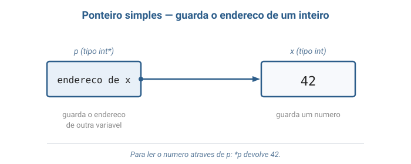
Como ler através do ponteiro
*p significa "vai até o endereço guardado em p
e me devolve o que está lá".
Sepguarda o endereço dex, então*pé o própriox.
Degrau 2 — ponteiro de ponteiro
Um int* também é uma variável — e toda variável
tem um endereço.
int**guarda o endereço de umint*.
Dois saltos até chegar no número
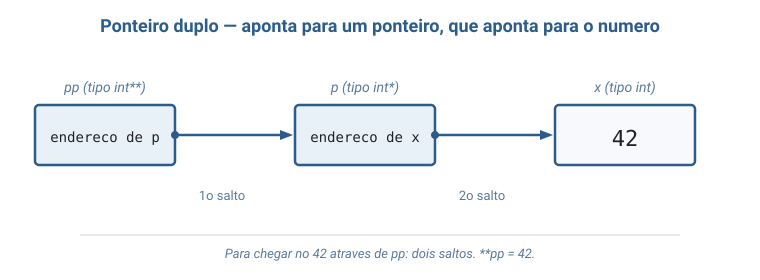
**pp = "siga o primeiro endereço, depois o segundo, devolva o que está lá".
Para que servem dois saltos?
Se um int* pode apontar para um vetor de inteiros...
...então umint**pode apontar para um vetor deint*— um vetor cujos elementos são, eles mesmos, vetores. É essa a matriz.
Como o C guarda int m[3][4] na memória
Antes de chegar ao ponteiro duplo, vamos ver como o C arruma uma matriz estática. Não existe grade — existem inteiros enfileirados.
posição: 0 1 2 3 4 5 6 7 8 9 10 11
valor: m[0][0] m[0][1] m[0][2] m[0][3] m[1][0] m[1][1] m[1][2] m[1][3] m[2][0] m[2][1] m[2][2] m[2][3]
└──── linha 0 ─────────┘ └──── linha 1 ─────────┘ └──── linha 2 ─────────┘Um único bloco contíguo de 12 inteiros, ordem row-major: linha por linha.
m[i][j] na matriz estática
Não há "vetor de ponteiros" aqui — o compilador apenas caminha pela
fila de inteiros até a posição certa. Quem traduz [i][j]
para a célula correta é ele, automaticamente.
Consequência visual:m[0][3]em[1][0]são vizinhos na memória — posições3e4da fila, mesmo estando em "linhas diferentes" na grade lógica.
E quando L e C só são conhecidos em runtime?
Se o usuário decide as dimensões durante a execução, a estática não serve: o compilador não consegue reservar memória sem saber os números antes.
Solução: pedir memória durante a execução do programa com
malloc, já com as dimensões em mãos.
Alternativa 1 — um único bloco enfileirado
A ideia mais econômica: um único malloc que
devolve todos os inteiros enfileirados, exatamente como no caso estático.
Rápido e barato — mas perdemos a sintaxe m[i][j]. O que
recebemos é um vetor de uma dimensão só; quem chama
precisa calcular a posição da célula na mão a cada acesso.
Alternativa 2 — vetor de ponteiros para linhas
Para reaver a sintaxe m[i][j], mudamos a representação:
L blocos separados, um por linha, mais um vetor extra de
L ponteiros.
- O vetor externo guarda L endereços de linhas.
- Cada linha é um
mallocindependente — vive em algum lugar da memória. - Tipo do ponteiro externo:
int**.
Como isso fica na memória
Cada componente da indireção tem nome e endereço próprios — nada está escondido em fórmula.
M->dados vetor externo (L ponteiros)
┌──────┐ ┌─────────┬─────────┬─────────┐
│ int**│────────────▶│ int* │ int* │ int* │
└──────┘ └────┬────┴────┬────┴────┬────┘
│ │ │
▼ ▼ ▼
┌────────┐ ┌────────┐ ┌────────┐
│ linha 0│ │ linha 1│ │ linha 2│
└────────┘ └────────┘ └────────┘
(cada uma em algum lugar da memória)A consequência: vizinhança lógica ≠ vizinhança física
Comparando com a estática, muda quem é "vizinho de quem" em memória.
- Estática / linearizada:
m[0][3]em[1][0]são vizinhos — endereços consecutivos. - Ponteiro duplo:
linha[0]elinha[1]podem estar em lugares totalmente diferentes da memória.
O vetor de ponteiros é quem reconstrói a estrutura bidimensional logicamente.
Por que esta aula escolhe int**
A versão linearizada é mais econômica. A estática é mais simples. Mas
apenas o int** nos dá uma coisa:
Cada parte da indireção tem nome e endereço próprios na memória — o ponteiro externo, o vetor de ponteiros, cada linha.
O preço é pequeno: L+1 mallocs e L ponteiros extras.
O ganho é didático — o ponteiro duplo fica visível.
Degrau 3 — assim a matriz é montada
Um int** aponta para um vetor de
L ponteiros; cada ponteiro aponta para
uma linha de C inteiros.
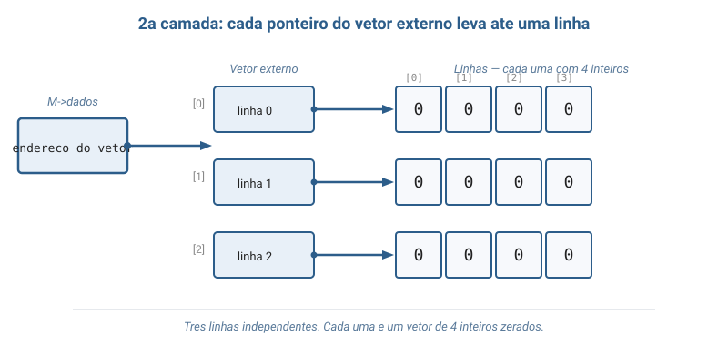
dados aponta para vetor externo com 3 slots; cada slot aponta para uma linha de 4 inteiros">O que M[i][j] faz por baixo
São os dois saltos do degrau anterior, agora com nome:
M[i]— pulaicasas no vetor externo → linha i.M[i][j]— pulajcasas dentro da linha → número final.
Sempre O(1): duas somas e duas leituras de memória.
Operações em detalhe — custos
Quatro operações, custos casados com a estrutura do ponteiro duplo.
criar:L + 1mallocs · custo O(L · C) dominado pela zeragem.obter/definir: duas indireções, sem laço · O(1).destruir:Lfrees de linha + 1 do vetor + 1 da struct · O(L).
Invariantes — o que precisa valer sempre
Cada operação tem o dever de manter estas três coisas verdadeiras, do
criar ao destruir.
- Dimensões fixas:
LeCnão mudam. Não há "redimensionar" — quem precisar de mais espaço, cria nova e copia. - Cobertura válida: todo
(i, j)dentro dos limites aponta para memória alocada — vetor externo comLslots, cada um comCinteiros. - Limites são do cliente: C não checa — acesso fora é comportamento indefinido.
Por que a ordem na destruição importa
Liberar o vetor externo antes das linhas seria o erro clássico.
Depois de free(M->dados), os endereços das linhas
somem — perdemos o mapa para chegar até elas, e cada uma
fica vazada para sempre.
Ordem correta: linhas → vetor externo → struct.
Camada 4
TAD Matriz — assinaturas
Agora formalizamos o contrato observável da matriz — operações com tipos de entrada/saída, sem mencionar a representação interna.
TAD Matriz de Inteiros
Tipos: Matriz, Inteiro
Operacoes:
criar(Inteiro L, Inteiro C) -> Matriz
linhas(Matriz) -> Inteiro
colunas(Matriz) -> Inteiro
definir(Matriz, Inteiro i, Inteiro j, Inteiro v) -> Matriz
obter(Matriz, Inteiro i, Inteiro j) -> InteiroOs axiomas
Os 5 axiomas abaixo definem o comportamento observável. Cada um pode ser aplicado mecanicamente em traces manuais.
- A1.
linhas(criar(L, C)) = L - A2.
colunas(criar(L, C)) = C - A3.
obter(criar(L, C), i, j) = 0— nasce zerada - A4.
obter(definir(M, i, j, v), i, j) = v— o que gravo, leio - A5.
obter(definir(M, i, j, v), i', j') = obter(M, i', j')se(i,j) ≠ (i',j')— efeito local
O coração do TAD
Entre os 5 axiomas, dois capturam a essência da matriz como coleção de células independentes:
A4 — "o que gravei, leio de volta".
A5 — "gravar numa célula não mexe nas outras".
A3 acrescenta a garantia de estado inicial: matriz recém-criada vem zerada.
Representação interna como tupla
Agora descemos da abstração para o concreto: como representamos uma matriz em C com ponteiro duplo.
M = (L, C, dados)
- L ∈ ℕ⁺ — número de linhas.
- C ∈ ℕ⁺ — número de colunas.
- dados — função
(i, j) → ℤ; em C, umint**.
Camada 5
Comparando custos das três representações
Já vimos as três opções; agora colocamos os custos lado a lado. A coluna em negrito é a desta aula.
| Operação | int m[L][C] |
int** |
int* m linear |
|---|---|---|---|
criar | O(1) (pilha) | O(L · C) | O(L · C) + 1 malloc |
obter(i,j) | O(1) | O(1) | O(1) |
definir(i,j,v) | O(1) | O(1) | O(1) |
destruir | auto | O(L) + L+1 frees | 1 free |
Acesso é O(1) nas três · o que muda é o custo de criação e o modelo de alocação
O(1) no acesso — mas não pelo mesmo trabalho
Todas as três fazem obter em tempo constante. O número de passos é fixo,
mas o trabalho concreto difere.
- Estática: o compilador caminha até a célula — uma leitura.
- Linearizada: o mesmo caminhar, mas quem precisa "saber o caminho" é o cliente.
int**: duas leituras — primeiro o ponteiro da linha, depois o inteiro.
Por que criar é mais caro em int**
Os L * C inteiros precisam ser zerados em qualquer versão dinâmica.
O que muda é o número de chamadas a malloc.
Linearizada: 1 malloc grande. int**: L + 1
mallocs (vetor externo + uma por linha).
Em matrizes muito grandes, fazer mil chamadas em vez de uma cobra um preço perceptível.
E o espaço extra?
A versão int** gasta L ponteiros além dos
L*C inteiros — o vetor externo.
Em máquina 64 bits: 8 bytes por ponteiro. Matriz 1000 × 1000 paga 8 KB extras sobre ~4 MB de inteiros — pequeno em proporção.
Conta mais quando há muitas matrizes pequenas.
Camada 6
Onde a matriz aparece em computação
A matriz é a representação universal para qualquer dado que se organiza em grade — aparece em praticamente toda subárea da computação.
- Imagens digitais — cada pixel é uma célula; foto colorida é 3 matrizes (R, G, B).
- Grafos — matriz de adjacência, célula
(i,j)= 1 se há aresta. Aula futura. - ML e álgebra linear — entradas e pesos de redes neurais. NumPy, BLAS, LAPACK existem para isso.
- Computação gráfica — rotação, escala, translação são multiplicações de matrizes.
Variantes que economizam memória
Quando os dados têm estrutura especial, a matriz cheia desperdiça espaço. Surgem variantes específicas — uma por cenário.
- Esparsa: maioria das células é zero (ex.: grafo com poucos arcos). Guarda só as não-nulas.
- Triangular: matriz simétrica (ex.: distância entre cidades). Metade é redundante — guarda só o triângulo.
- Jagged: linhas com tamanhos diferentes (ex.: notas por aluno).
int**suporta nativamente.
Bloco 2
Visualização gráfica
Ciclo de vida completo de uma matriz 3 × 4:
criação · três definir · uma leitura · destruição.
Passo 1a — primeiro o "esqueleto"
M->dados guarda o endereço de um vetor de
ponteiros — um slot para cada linha.
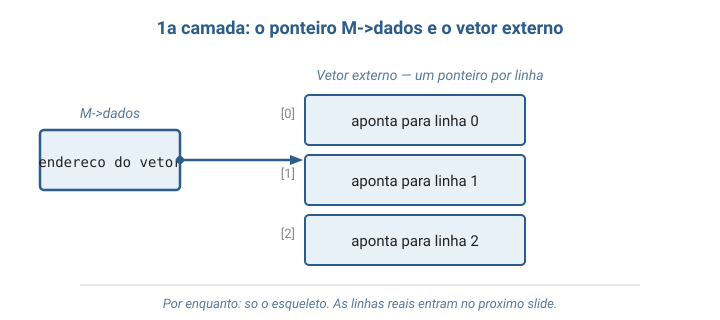
dados aponta para um vetor externo com três slots: um para cada linha. As linhas ainda não existem">Passo 1b — agora as linhas
Cada slot do vetor externo aponta para uma linha — e cada linha é um vetor de 4 inteiros zerados.
Passo 1c — como M[1][2] chega no número
São dois saltos: primeiro até a linha 1, depois até a coluna 2.
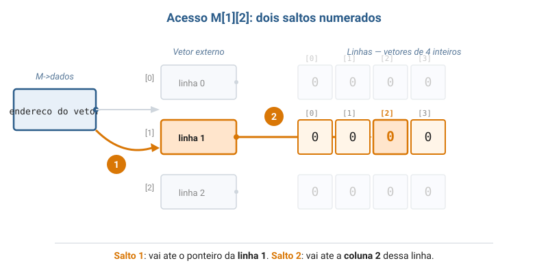
Passo 2 — matriz_criar(3, 4)
Duas camadas de alocação: vetor externo com 3 ponteiros, depois cada linha com 4 inteiros zerados. 4 mallocs no total.
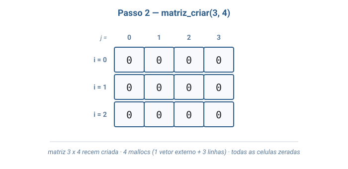
Passo 3 — matriz_definir(0, 1, 7)
Atribuição direta: M->dados[0][1] = 7. Apenas a célula
(0, 1) muda — as demais permanecem zeradas (axioma A5).
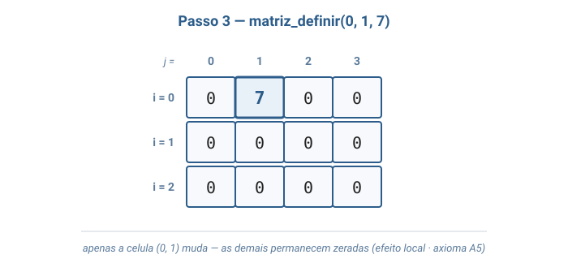
Passo 4 — matriz_definir(2, 3, 5)
Linha e coluna diferentes da anterior. Cada linha é um bloco de memória independente alcançado pelo ponteiro externo — não há "deslocamento" como em vetor linear.
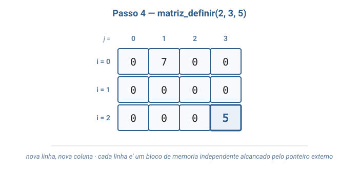
Passo 5 — matriz_definir(1, 0, 9)
Linha do meio, primeira coluna. Mesmo padrão: duas indireções, custo O(1).
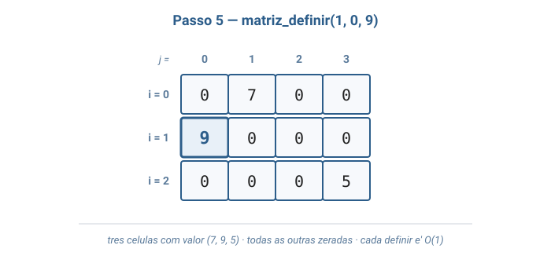
Passo 6 — matriz_obter(2, 3)
Devolve 5. Não altera a matriz — só lê.
Caixa pontilhada no diagrama sinaliza leitura.
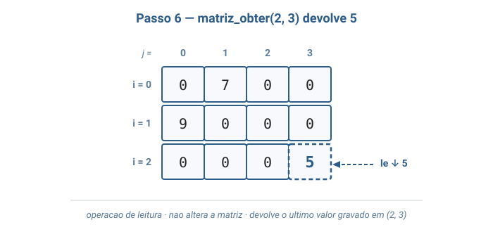
Passo 7 — matriz_destruir(M)
Liberação na ordem inversa da alocação: cada linha, depois o vetor externo, depois a struct. Inverter causa vazamento.
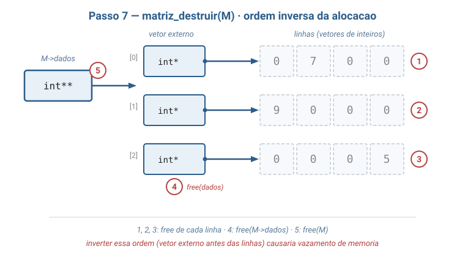
Bloco 3
Por que matriz existe?
Como o Instagram aplica um filtro?
"Como o Instagram aplica um filtro 'preto e branco' em uma foto?"
Uma fotografia digital é uma matriz de pixels. Em 1920 × 1080, são mais de 2 milhões de células.
O algoritmo do filtro
Aplicar tons de cinza é literal:
- Percorrer cada célula
(i, j)da matriz. - Calcular uma intensidade única a partir das componentes RGB.
- Gravar esse valor numa nova matriz de saída.
Cada acesso é O(1) graças ao par de índices direto.
O mesmo padrão fora do Instagram
Sempre que dados se organizam em grade com acesso por par de coordenadas, a matriz reaparece — em contextos bem diferentes da foto.
- Recomendação — matriz usuários × itens com a nota dada.
- Mapas de calor — cada célula vira um pixel colorido proporcional ao valor.
- Tabuleiros — xadrez, sudoku: estado do jogo em grade.
A lista completa de aplicações aparece na Camada 6 da seção anterior.
Turma, quando vocês usam o NumPy em Python — biblioteca padrão de
ciência de dados — todo ndarray de duas dimensões é
uma matriz por baixo dos panos, escrita em C. A diferença é que
o NumPy usa representação linearizada com um único
bloco contíguo, exatamente a terceira opção que vocês viram na
tabela de complexidade. A ergonomia m[i][j] em Python
é só uma camada de açúcar sintático em cima disso.
Bloco 4
Analogias
1. Tabuleiro de xadrez
O tabuleiro mostra como cada propriedade da matriz se traduz num objeto que todo mundo conhece.
Matriz 8 × 8. Cada casa tem coordenada: letras a–h
(colunas) e números 1–8 (linhas). "Cavalo para f3"
vira matriz_definir(tabuleiro, 2, 5, cavalo).
- Tamanho fixo durante toda a partida.
- Sem ordem implícita entre as casas.
- Acesso direto, sem percorrer.
2. Mapa de poltronas do cinema
Fileiras (letras) × poltronas (números). Sua "fileira G, poltrona 12"
é o par (6, 11).
- Cada célula:
0(livre),1(ocupada),2(sua). - Comprar poltrona =
matriz_definir(sala, fileira, num, 1). - Consultar disponibilidade =
matriz_obter(...). - Dimensões da sala não mudam durante a sessão.
Bloco 5
Código em C
Um único arquivo: matriz.c
Tudo vive num só arquivo — #includes, struct, funções da TAD
e main() demonstrativa. A separação .h / .c
fica para a aula futura sobre organização de projetos.
A simplicidade é didática: dá pra ler o programa todo, de cima a baixo, em um único scroll.
Includes e struct
A struct guarda as dimensões e o ponteiro duplo que organiza o acesso.
#include <stdio.h>
#include <stdlib.h>
// A matriz guarda suas dimensoes e um ponteiro duplo "dados".
// O ponteiro duplo aponta para um vetor de ponteiros — cada
// posicao desse vetor aponta para uma linha (vetor de inteiros).
typedef struct Matriz {
int linhas;
int colunas;
int** dados;
} Matriz;matriz_criar — alocação em duas camadas
Primeiro o vetor externo, depois cada linha. Total: L + 1 mallocs.
Matriz* matriz_criar(int linhas, int colunas) {
Matriz* m = malloc(sizeof(Matriz));
if (m == NULL) { printf("erro: memoria insuficiente\n"); exit(1); }
m->linhas = linhas;
m->colunas = colunas;
// Camada 1: vetor externo com "linhas" ponteiros para int.
m->dados = malloc(linhas * sizeof(int*));
if (m->dados == NULL) { printf("erro: memoria insuficiente\n"); exit(1); }
// Camada 2: cada linha aloca "colunas" inteiros e zera tudo.
for (int i = 0; i < linhas; i++) {
m->dados[i] = malloc(colunas * sizeof(int));
if (m->dados[i] == NULL) { printf("erro: memoria insuficiente\n"); exit(1); }
for (int j = 0; j < colunas; j++) {
m->dados[i][j] = 0;
}
}
return m;
}definir e obter — O(1) puro
Atribuição direta e leitura direta. As pré-condições de índice ficam em comentário; quem chama é responsável.
// Pre-condicao: 0 <= i < linhas e 0 <= j < colunas.
// m->dados[i][j] equivale a *(*(m->dados + i) + j):
// duas indirecoes — primeiro a linha i, depois a coluna j.
void matriz_definir(Matriz* m, int i, int j, int valor) {
m->dados[i][j] = valor;
}
int matriz_obter(Matriz* m, int i, int j) {
return m->dados[i][j];
}
int matriz_linhas(Matriz* m) { return m->linhas; }
int matriz_colunas(Matriz* m) { return m->colunas; }matriz_destruir — ordem importa
Liberar na ordem inversa da alocação: cada linha, depois o vetor externo, depois a struct.
// Libera TODA a memoria da matriz, na ordem inversa da alocacao:
// 1) cada linha (free de cada vetor de inteiros);
// 2) o vetor externo de ponteiros;
// 3) a propria struct Matriz.
void matriz_destruir(Matriz* m) {
for (int i = 0; i < m->linhas; i++) {
free(m->dados[i]);
}
free(m->dados);
free(m);
}
Turma, se um dia vocês esquecerem a ordem em
matriz_destruir ou esquecerem o free de
alguma linha, existe uma ferramenta clássica que pega isso na hora:
o valgrind. Rodando valgrind ./matriz_demo,
ele aponta cada bloco que ficou vazado e o número da linha onde foi
alocado. É indispensável quando se trabalha com malloc manual.
main() — demonstração do ciclo
Exercita criar, definir, imprimir, obter e destruir — exatamente o ciclo do bloco 2.
int main(void) {
Matriz* m = matriz_criar(3, 4);
printf("Matriz recem criada (3x4, zerada):\n");
matriz_imprimir(m);
matriz_definir(m, 0, 1, 7);
matriz_definir(m, 2, 3, 5);
matriz_definir(m, 1, 0, 9);
printf("\nApos definir (0,1)=7, (2,3)=5 e (1,0)=9:\n");
matriz_imprimir(m);
printf("\nObter (2,3) = %d (a matriz nao muda)\n",
matriz_obter(m, 2, 3));
printf("\nDimensoes: %d linhas x %d colunas\n",
matriz_linhas(m), matriz_colunas(m));
matriz_destruir(m);
return 0;
}Compilando e rodando
Tudo num arquivo só — linha de compilação direta. Saída esperada abaixo é a prova empírica dos axiomas.
gcc -Wall -Wextra -o matriz_demo matriz.c
./matriz_demoMatriz recem criada (3x4, zerada):
[ 0 0 0 0 ]
[ 0 0 0 0 ]
[ 0 0 0 0 ]
Apos definir (0,1)=7, (2,3)=5 e (1,0)=9:
[ 0 7 0 0 ]
[ 9 0 0 0 ]
[ 0 0 0 5 ]
Obter (2,3) = 5 (a matriz nao muda)
Dimensoes: 3 linhas x 4 colunasBloco 6
Exercícios práticos
Cinco exercícios em ordem crescente de dificuldade — o último é o desafio.
Exercício 1 — trace na mão
Matriz 3 × 3 recém-criada (zerada). Execute em ordem e diga o estado após cada operação:
matriz_definir(m, 0, 0, 1)matriz_definir(m, 1, 1, 2)matriz_definir(m, 2, 2, 3)matriz_obter(m, 1, 1)matriz_definir(m, 0, 2, 4)
- Estado final: linha 0 =
[1, 0, 4]· linha 1 =[0, 2, 0]· linha 2 =[0, 0, 3] matriz_obter(m, 1, 1)devolve2sem alterar a matriz (axioma A4).
Exercício 2 — matriz identidade
Adicione matriz_preencher_identidade(Matriz* m): célula
(i, j) recebe 1 se i == j, senão 0.
void matriz_preencher_identidade(Matriz* m) {
for (int i = 0; i < m->linhas; i++) {
for (int j = 0; j < m->colunas; j++) {
m->dados[i][j] = (i == j) ? 1 : 0;
}
}
}Exercício 3 — soma de matrizes
Matriz* matriz_somar(Matriz* a, Matriz* b): devolve nova
matriz c com c[i][j] = a[i][j] + b[i][j].
Assuma dimensões iguais. Destruir a ou b não pode afetar c.
Matriz* matriz_somar(Matriz* a, Matriz* b) {
Matriz* c = matriz_criar(a->linhas, a->colunas);
for (int i = 0; i < a->linhas; i++) {
for (int j = 0; j < a->colunas; j++) {
c->dados[i][j] = a->dados[i][j] + b->dados[i][j];
}
}
return c;
}Exercício 4 — transposta
Matriz* matriz_transposta(Matriz* m): devolve nova matriz
com t[j][i] = m[i][j]. Se m é L × C, então
t é C × L.
Matriz* matriz_transposta(Matriz* m) {
Matriz* t = matriz_criar(m->colunas, m->linhas);
for (int i = 0; i < m->linhas; i++) {
for (int j = 0; j < m->colunas; j++) {
t->dados[j][i] = m->dados[i][j];
}
}
return t;
}
Turma, o próximo é o desafio. Antes de ver a solução, tente
desenhar no caderno uma matriz 3 × 3 com valores
1–9 e marcar para onde cada célula vai
após uma rotação 90° horária. A fórmula da resposta vai aparecer
sozinha.
Exercício 5 — desafio: rotação 90°
Matriz* matriz_rotacionar_90(Matriz* m): nova matriz r
correspondente a m rotacionada 90° no sentido horário.
Fórmula: r[j][L - 1 - i] = m[i][j].
m = [[1,2,3], r = [[7,4,1],
[4,5,6], [8,5,2],
[7,8,9]] [9,6,3]]Matriz* matriz_rotacionar_90(Matriz* m) {
int L = m->linhas;
int C = m->colunas;
Matriz* r = matriz_criar(C, L);
for (int i = 0; i < L; i++) {
for (int j = 0; j < C; j++) {
r->dados[j][L - 1 - i] = m->dados[i][j];
}
}
return r;
}Referências
- Tenenbaum, Langsam & Augenstein — Estruturas de Dados Usando C. Capítulo 1 — "Introdução às Estruturas de Dados", seções sobre arrays e arrays multidimensionais.
- Sedgewick, R. — Algoritmos em C, Parte 1, capítulo inicial sobre estruturas elementares de dados — arrays bidimensionais.
Leituras complementares:
- CLRS — apêndice de notação matricial; algoritmos matriciais (Strassen).
- Ziviani, N. — vetores e matrizes em PT-BR.
- Kernighan & Ritchie (K&R) — cap. 5,
Pointers and Arrays — referência canônica sobre ponteiros e
int**.
Fim — Matriz
Próxima aula em breve
Vimos a primeira estrutura bidimensional da disciplina — e o ponteiro duplo deixou de ser misterioso. As próximas aulas voltam às estruturas encadeadas e usarão a matriz novamente como matriz de adjacência em grafos.